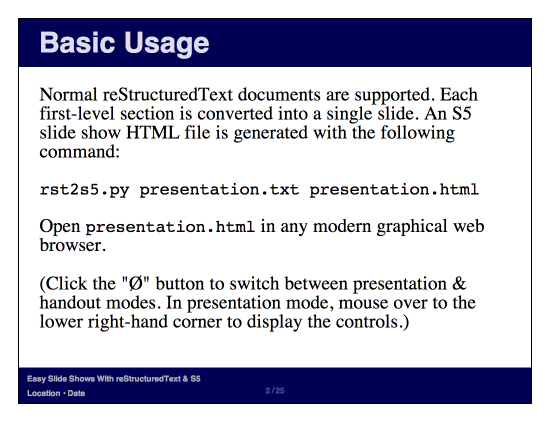
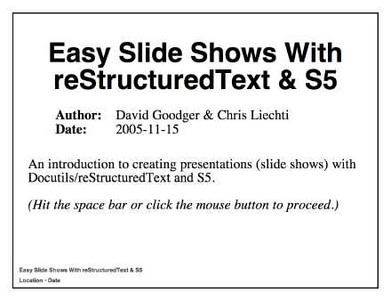
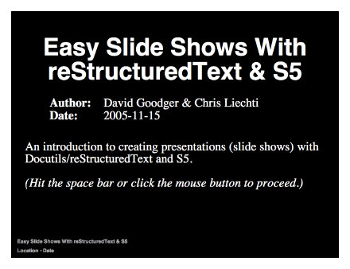
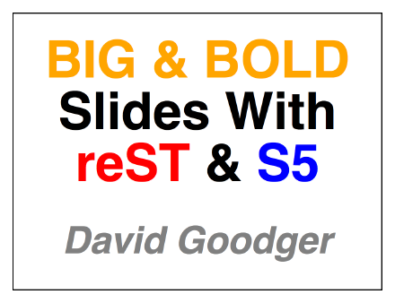
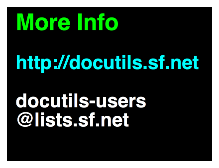
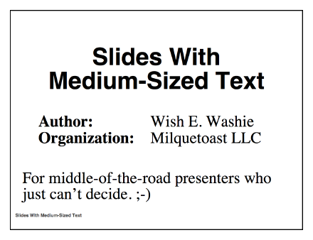
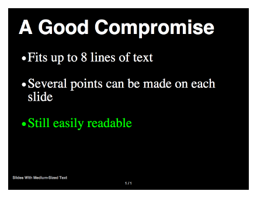
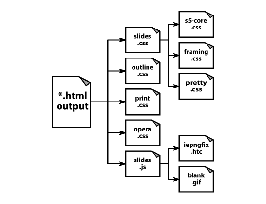

Easy Slide Shows With reST & S5
- Date:
- $Date$
How to create quick, good-looking presentation slide shows with Docutils /reStructuredText and S5 .
This document serves both as a user manual and as a usage example of the s5_html.py writer and the rst2s5.py front end.
To view this document as a slide show see https://docutils.sourceforge.io/docs/user/slide-shows.s5.html (or your local copy).
S5 themes are designed for full-screen display areas with a 4:3 aspect ratio. If the slide text doesn't fit in your browser window, try decreasing the text size.
Use the space bar to advance, Page Up/Down & arrow keys to navigate.
Best viewed in Firefox , Safari, and Konqueror. Click the "Ø" button to switch between presentation & handout/outline modes. Hit the "C" key to display the navigation controls, or mouse over the lower right-hand corner.
Functionality is limited in Opera. Switch to full-screen mode (F11 key) to activate Opera Show.
S5 works in Internet Explorer, but it may look ugly.
The first slide of a presentation consists of all visible text up to the first section title. The document title is also added to the footer of all slides.
The "footer" directive is used to specify part of the slide footer text. It is currently limited to one short line (one paragraph).
There is no support for the "header" directive in the themes included with Docutils.
Introduction
rst2s5.py is a Docutils front end that outputs HTML for use with S5 , a "Simple Standards-based Slide Show System" by Eric Meyer.
reStructuredText
Uses normal reStructuredText as input.
One section per slide
Each first-level section is converted into a single slide.
XHTML output
Presentations can be viewed using most modern graphical web browsers. The browser must support CSS, JavaScript, and XHTML. S5 even works with IE!
S5 was designed to add the functionality of the Opera Show standard (without Opera Show's limitations) to non-Opera browsers. Unfortunately, most of S5's CSS and JavaScript extensions don't function in the Opera browser.
Themes
A variety of themes are available. See Example Themes, below.
rst2s5.py
The front-end tool to generate S5 slide shows.
Features (1)
The S5/HTML Writer supports all the standard Docutils HTML features. S5 has been released to the Public Domain.
S5-specific features:
The document title is duplicated on each slide in the S5 footer.
The footer directive may be used to define additional text in the S5 footer.
But it is limited to one line of text.
This is useful for information such as the date of the presentation and/or the location. The field in the footer is left blank if no footer directive is used.
Example:
.. footer:: Location - Date
There is also a progress indicator (slide counter) in the footer that can be enabled. It's disabled by default.
Incremental display.
An "incremental" class can be assigned to lists and other elements to get one-item-at-a-time behavior (like this list). Incremental display does not work in the Opera browser.
Text auto-scaling.
The text size adjusts relative to the size of your browser window automatically. You may need to reload the document after resizing the window. The browser and platform affect the font used; be sure to test the slide show on the presentation system.
Features (2): Handouts
The contents of any element with a "class" attribute value of "handout" are hidden in the slide presentation, and are only visible when the presentation is printed, or viewed in outline mode. "Handout"-class elements can appear anywhere in the text, as often as needed.
This means that the slides and extra handout material can be combined in one document. The handout can be printed directly from the browser, and it will contain more than just silly framed slides. This can be used to provide more detailed information, or for speaker's notes.
Use the "class" directive:
.. class:: handout
The .. class:: handout directive can be used to tag individual paragraphs and other elements. The "class" directive applies to the first element immediately following:
.. class:: handout This paragraph will get a ``class="handout"`` attribute. This paragraph will not be affected.
It also applies to multiple elements in the directive content:
.. class:: handout These paragraphs are the content of the "class" directive. And as such... Both paragraphs will *individually* receive ``class="handout"`` attributes.
Use the "container" directive:
.. container:: handout
Arbitrary handout blocks can be created using the container directive. The content is treated as one.
Use the "class" option of directives that support it:
.. topic:: Extra Material For Handouts :class: handout
The following directives support "class" options:
all admonition directives ("admonition", "note", "hint", etc.)
"image" & "figure"
"topic"
"sidebar"
"line-block"
"parsed-literal"
"rubric"
"compound"
"table", "csv-table", & "list-table"
"target-notes" (more about that below)
"role" (pre-defined; more below)
Handout contents are also visible on the screen if the S5 view mode is toggled from "slide show" to "outline" mode.
Caveats
Some Docutils features are not supported by some themes.
For example, header rendering is not supported by the themes supplied with Docutils.
The "header" directive is used to set header text. S5 automatically inserts section/slide titles into the "header" area of a slide. If both Docutils headers and S5 headers (slide titles) exist simultaneously, they interfere with each other.
Care must be taken with the "contents" directive.
The --no-toc-backlinks option is the default for the S5/HTML writer (toc_backlinks=0 setting). Other values for this setting will change the CSS class of headings such that they won't show up correctly in the slide show.
Use the :class: handout option on the "contents" directive to limit the table of contents to the handout/outline mode only:
.. contents:: :class: handout
3. Subsections ...
... may be used, sparingly.
Only first-level sections become slides. Not many levels of subsections can fit on a slide.
Subsections (of any level) work normally in handouts though. Add ".. class:: handout" before a subsection (or sub-subsection, or ...), and the entire subsection will only appear in the handout.
Generating a Slide Show (1)
Open a console (terminal, command shell) and go to the folder containing your file, slides.txt.
Run the command:
rst2s5.py slides.txt slides.html
Specify an S5 theme with the --theme option.
Docutils will copy the S5 theme files into a ui/<theme> folder beside the output HTML file. A slide show can also link to an existing theme using the --theme-url option.
Generating a Slide Show (2)
Include a copy of any linked stylesheet.
The default Docutils stylesheet, html4css1.css, will normally be embedded in the output HTML. If you choose to link to a stylesheet instead of embedding, you must include a copy (suggested location: in the ui/ directory).
Open slides.html in a web browser.
Expand the browser window to full-screen mode, and speak.
The Web Developer extension for Firefox is very useful. With it, you can resize your browser window to the exact dimensions of the projector you'll be using, so you can test beforehand. There are many other useful features as well.
Profit!
Examples (1)
A |
B |
A or B |
|---|---|---|
False |
False |
False |
True |
False |
True |
False |
True |
True |
True |
True |
True |
Examples (2): Incremental Text
Paragraphs can be displayed one at a time...
... or a bunch at a time.
This second paragraph is displayed together with the previous one by grouping them with the "container" directive.
We can also display one word at a time, or a phrase at a time, or even one letter at a time!
(But the markup ain't pretty.)
Examples (3): Incr. Graphics
Let's play... Rock, Scissors, Paper

Themes
Several themes are available, and they're easy to adapt.
Sites with other S5 themes:
Do a web search for "S5 theme" and you're bound to find plenty of choices.
"--theme" option.
The theme can be specified with the "--theme" command-line option.
Example:
rst2s5 --theme big-black slides.txt slides.html
The default theme is "default".
"theme" setting.
You can set the theme with the "theme" configuration file setting.
Copied to ./ui/<theme>/.
Themes are copied into a ui/<theme> folder inside the folder containing the presentation.
Link with "--theme-url" option.
Link to a theme on the same or another web site, using the "--theme-url" option or "theme_url" configuration file setting.
Example Themes
The default theme, "default", is a simplified version of S5's default theme. It accommodates up to 13 lines of text.
"default"
Example Themes: Small Text
The "small-white" and "small-black" themes are simplifications of the default theme (small black text on a white background, and small black text on a white background, respectively). They each accommodate up to 15 lines of text.
"small-white"  |
"small-black"  |
Example Themes: Large Text
The "big-white" and "big-black" themes feature very large, bold text, with no footers. Only five short lines fit in a slide.
"big-white"  |
"big-black"  |
Example Themes: Medium Text
The "medium-white" and "medium-black" themes feature medium-sized text. Up to 8 lines of text are accommodated.
"medium-white"  |
"medium-black"  |
S5 Theme Files
An S5 theme consists of a directory containing several files -- stylesheets, JavaScript, and graphics:
The generated HTML contains the entire slide show text. It also contains links to the following files:
slides.css simply contains import links to:
s5-core.css: Default styles critical to the proper functioning of the slide show; don't touch this!
framing.css: Sets the basic layout of slide components (header, footer, controls, etc. This file is the often edited.
pretty.css: Presentation styles that give the slide show a unique look and feel. This is the file that you're most likely to edit for a custom theme. You can make a whole new theme just by editing this file, and not touching the others.
outline.css: Styles for outline mode.
print.css: Styles for printing; hides most layout elements, and may display others.
opera.css: Styles necessary for the proper functioning of S5 in Opera Show.
slides.js: the JavaScript that drives the dynamic side of the slide show (actions and navigation controls). It automatically IDs the slides when the document loads, builds the navigation menu, handles the hiding and showing of slides, and so on. The code also manages the fallback to Opera Show if you're using the Opera web browser.
Making a Custom Theme
Run "rst2s5.py --theme <base-theme> <doc>.txt <doc>.html".
This initializes the ui directory with the base theme files.
Copy ui/<base-theme> to ui/<new-theme>.
Edit the styles (save in UTF-8 encoding).
Start with pretty.css; edit framing.css if you need to make layout changes.
Run "rst2s5.py --theme-url ui/<new-theme> <doc>.txt <doc>.html".
We use the --theme-url option to refer to the new theme. Open your <doc>.html in a browser to test the new theme.
Rinse & repeat.
Repeat from step 3 until you're satisfied.
Resources:
W3C's Learning CSS
A short tutorial on how to create themes (in German): Eigenes Theme erstellen
Classes: Incremental (1)
Several "class" attribute values have built-in support in the themes supplied with Docutils.
As described earlier,
.. class:: incremental
.. container:: incremental
.. sidebar:: title :class: incremental
Classes: Incremental (2)
The "incremental" interpreted text role is also supported:
:incremental:`This will appear first,` `and this will appear second.`:incremental:
Requires ".. include:: <s5defs.txt>".
As you can see, this markup is not very convenient.
`This` `is` `all` `we` `need`
This is all we need to mark up incremental text.
Classes: Incremental (3)
.. container:: animation
.. image:: images/empty.png
:class: hidden slide-display
.. class:: incremental hidden slide-display
.. image:: images/1.png
.. image:: images/2.png
.. image:: images/3.png
:class: incremental
This is how the example works.
The animation effects are caused by placing successive images at the same location, laying each image over the last. For best results, all images should be the same size, and the positions of image elements should be consistent. Use image transparency (alpha channels) to get overlay effects.
Absolute positioning is used, which means that the images take up no space in the flow. If you want text to follow the images, you have to specify the total size of the container via a style. Otherwise, the images and any following text will overlap.
These class values do the work:
- animation
This wraps the container with styles that position the images absolutely, overlaying them over each other. Only useful on a container.
- hidden
Unless overridden (by "slide-display", for example), these elements will not be displayed. Only the last image will be displayed in handout mode, when print, or when processed to ordinary HTML, because it does not carry a "hidden" class.
- slide-display
In conjunction with "hidden", these elements will only appear on the slide, preventing clutter in the handout.
- incremental
The second and subsequent images will appear one at a time. The first image will already be present when the slide is displayed, because it does not carry an "incremental" class.
Classes: Text Size
tiny (class & role name: "tiny", e.g. ":tiny:`text`")
small ("small")
normal (unstyled)
big ("big")
huge ("huge")
Requires ".. include:: <s5defs.txt>".
Classes: Alignment
Left (class name: "left")
Center ("center" & "centre")
Right ("right")
These classes apply to block-level elements only. They cannot be used for inline text (i.e., they're not interpreted text roles).
Example:
.. class:: center Text to be centered.
Classes: Text Colours
black [black], gray, silver, white [white], maroon, red, magenta, fuchsia, pink, orange, yellow, lime, green, olive, teal, cyan, aqua, blue, , purple
The class names and role names are the same as the colour names. For example, ":orange:`text`" produces "text".
Requires ".. include:: <s5defs.txt>".
Classes: Borderless Tables
Here's an ordinary, unstyled table:
Sometimes |
borders |
are |
useful. |
And after applying ".. class:: borderless":
But |
sometimes, |
borders |
are |
not |
wanted. |
Classes: Print-Only
Elements with class="print" attributes display their contents when printed, overriding class="hidden".
Example: the "target-notes" directive:
.. topic:: Links
:class: hidden print
.. target-notes::
:class: hidden print
One good example, used in this document, is the "target-notes" directive. For each external target (hyperlink) in the text, this directive generates a footnote containing the visible URL as content. Footnote references are placed after each hyperlink reference.
The "topic" directive is given a "class" attribute with values "hidden" and "print", so the entire topic will only be displayed when printed. The "target-notes" directive also assigns a "class" attributes with values "hidden" and "print" to each of the footnote references it inserts throughout the text; they will only show up when printed.
Other uses may require ".. include:: <s5defs.txt>".
Useful Extensions For Firefox
-
Automatically hides toolbars in full-screen mode.
-
Adds a context submenu and a toolbar with a lot of useful functionality, including the viewing and live editing of stylesheets, and sizing the browser window.
To Do
Multi-display support:
speaker's notes on the laptop screen
slides on the projector
two views stay in sync
presentation controlled from either display
Add timeout to incremental style.
I.e., incremental-specific style should go away (revert to normal) after a certain interval.
These will require some serious JavaScript-fu!
That's All, Folks!
Further information: https://docutils.sourceforge.io
Docutils users' mailing list: docutils-users@lists.sourceforge.net
Any questions?